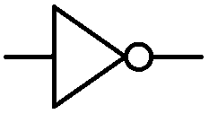
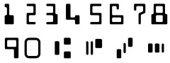
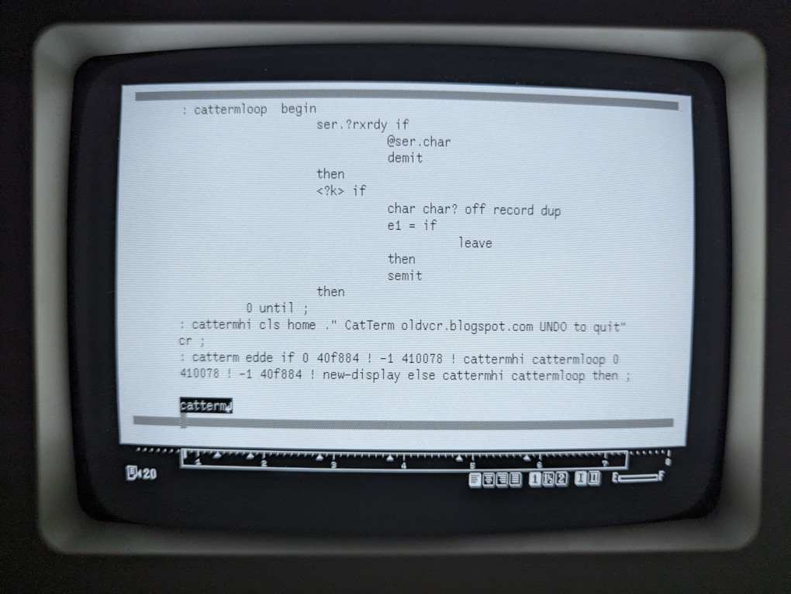

The Canon Cat is written in Forth, a concatenative programming environment available to the operator as a subsystem scripting language.
A holistic approach to computing and sustainability inspired from permaculture.
Permacomputing encourages the maximization of hardware lifespan, minimization of energy usage and focuses on the use of already available computational resources. It values maintenance and refactoring of systems to keep them efficient, instead of planned obsolescence, permacomputing practices planned longevity. It is about using computation only when it has a strengthening effect on ecosystems.

Designing for Disassembly ensures that all elements of a product can be disassembled for repair and for end of life. This allows for and encourages repairs, with the result that a product's life cycle is prolonged; and it allows for a product to be taken apart at the end of its life so that each component can be reclaimed.
That which cannot be repaired is already broken.
This means using simple mechanical fasteners instead of adhesives, clearly labeling components with their material type, and ensuring components can be disassembled with everyday tools. Unlike the nebulous goal of designing a sustainable product, designing a product for disassembly is a more concrete, quantifiable approach to ecologically sound making and to consumption.
| Permacomputing | |||
|---|---|---|---|
| Frugal Computing | Salvage Computing | Collapse Computing | |
| Utilizing computational resources as finite, to be utilized only when necessary, and as effectively as possible. | Utilizing only already available computational resources, to be limited by that which is already produced. | Utilizing what has survived the collapse of industrial production or network infrastructure. | |
Articulating the Value of Absence
There are attempts at drawing a line at the edge of one's computing needs, advised by the concepts of permacomputing, and personalized systems to address those needs, but there are no permacomputing products. Permacomputing is concerned about finding these limits, and not their artifacts.

Computation is intrinsically self-obviating, which is to mean that the computational system, by design, tries to make itself less and less necessary to the realization of its purpose, and gradually allow people to provide for their own welfare.
Asking for the most suitable programming language for permacomputing is akin to asking for the most suitable plant for permaculture — the entire question contradicts itself.Permacomputing Wiki, Programming Languages
- Terminology And Practices
- When the Implication Is Not to Design
- Permacomputing Wiki
- Frugal Computing
Open computation that goes beyond open source, made from parts designed to be recombined.
Every layer of a malleable computing system is designed to support arbitrary recombination, reused across environments and freely sharable with others. Modifying such a system happens in the context of use, rather than through some separate tool and skill set.
In contrast with monolithic applications, these amorphous computers are finely tuned and thoughtfully crafted by their operator over the course of a practice.
At its core, a malleable system is made of heterogeneous parts capable of assemblage. Within the context of computation, it is an attribute shared by different interoperable systems, not unlike programs that communicate via unix pipes, file browsers and some flow-based programming environments.
A malleable part is a transformer in a chain of transformers, and is itself also made of equally interconnected links, nodes or agents. The more malleable a system, the blurrier the distinction in the granularity of these parts.
| Malleability | |||
|---|---|---|---|
| Silo | A system in which nodes will forcefully captures the message is a silo. | ||
| Shallow | Messages can enter and leave a system that is not malleable itself, this is malleability of a superficial kind. | ||
| Average | Messages can flow freely between internal nodes of a malleable system, but capabilities are restricted by domain, interface, or operator competency. | ||
| Deep | Messages can be passed seamlessly across every level of the system, the division into layers has entirely vanished. | ||
A potential advantage to this granularity is the distribution of complexity so that an operator can more gently transition toward a deeper understanding of the finer parts that makes up the solution to a problem.

Designing for reversibility is to make a system approachable to a wide range of competency, lower the cost of errors, and limit the blame put upon its operator, by favoring transformations that can be undone.
Some automata conserve enough state through their transformation that computation can happen backward, without cluttering large amount of memory with screenshots.
Familiar examples of reversible computation are the multiplication of a number by a fraction and using the reciprocal to recover that number, or the stack machine operation rot. The bitwise operator not or the stack machine swap are involutive, which means that same operator can applied once again to recover the earlier state.
- Inverse Operators, Vine Language
- Thermodynamics of Garbage Collection, Henry G. Baker
- Undoing Register Machines, Fractran
Designing for concatenation is using a point-free message passing paradigm that does not identify the arguments on which it operates. It is mentioned here as it might prove valuable in a Deeply Malleable system as a way to combined both inspectability down to its the mechanical transformation, and reasonable evaluation performance.
: SQUARED ( n -- n^2 ) DUP * ; : CUBED ( n -- n^3 ) DUP SQUARED * ;
In such a system, nodes merely compose other nodes, among which are combinators that manipulate the arguments, regardless of context. This is a fancy way of saying that a concatenative sub-expression can be replaced with a name that represents that same sub-expression.
: POPCNT ( n -- bits ) 0 swap BEGIN dup WHILE tuck 1 AND + swap 1 rshift REPEAT DROP ;
A maximally accessible system such that the finer details in movement of bits are observable but that does not run on generic hardware would be paradoxical by virtue of its inaccessibility. For that reason, depending on the host computer, a function definition like the one above(which might exist as a single opcode), should probably still be part of the observable system definitions even if it is not evaluated.
Designing for differences is to consider the compatibility between wildly different interfaces and notations to support networks of people collaborating, across many levels of competency, to make software work for themselves and their communities.
The rewriting language Maude, uses a mixfix notation, making the system
neither prefix, infix, or postfix, but adaptable to the user's needs and
background. To demonstrate something akin to the mixfix notation and give a
taste of rewriting, consider a system made of rules where a given left-hand
side is replaced by its corresponding right-hand side, and where
?words will match anything.
(add ?x ?y) -> (?x + ?y) (?x ?y add) -> (?x + ?y) ((?a) + ?b) -> (?a + (?b)) (0 + ?b) -> (sum ?b)
(add 1 2)

The first two rules of the program above both enable the translation between
prefix & postfix, to the infix notation, as well as transcribing the english
symbol add that could otherwise be localized. This is to demonstrate that inter op between
vastly different systems is possible.
- Hedy, multi-lingual PL.
- No Stinking Loops, array notation.
Designing for bootstrapping is to make a system which does not depend on a binary seed that cannot be built from source. The goal is to start from a minimal, easily inspectable binary which should be readable as source and bootstrap into a practical and reproducible user interface. A build is reproducible if given the same source code, build environment and build instructions, any party can recreate bit-by-bit identical copies of all specified artifacts. To accomplish this:
- The build system needs to be made entirely deterministic. Transforming a given source must always create the same result. For example, the current date and time must not be recorded and output always has to be written in the same order.
- The set of tools used to perform the build and more generally the build environment should either be recorded or pre-defined.
- Users should be given a way to recreate a close enough build environment, perform the build process, and validate that the output matches the original build.
Deployment (n.): getting computer programs from one machine to another and having them still work when they get there.
- Malleable Essay, Ink & Switch
- Malleable Systems, forum
Figuring out how to make the best possible use out of the millions of devices which already exist.
Salvage computing believes that the end of a computer product's lifecycle should be seen as a moment of celebration, a moment when its socioeconomic context can finally be reclaimed. Scavenge-friendly electronics are parts that are no longer manufactured, but that are available by the billions in landfills. Those who can manage to create new designs from scavenged parts with low-tech tools will be able to preserve electronics.
It does not advocate for going back in time, despite advocating for a dramatic decrease in use of artificial energy, but trusts in human ingenuity to turn problems into solutions, competition into co-operation and waste into resources.
Design for Encapsulation: In order to ensure that, for example, a README file will be readable by any user, distribution disks include a simple text-editing program that can display the README file. Though most users already have one on their systems, software vendors should not to assume that this will be the case.
When a file is compressed using PKZIP, a decompression program, such as PKUNZIP, is required to expand the file. However, an option in PKZIP allows a simple version of an unzip program to be bundled with each compressed file. Choosing this option creates an executable file which, when run, expands automatically to the original file, avoiding the issue of whether the recipient of a compressed file will have the appropriate decompression software on hand.
| Technique | Description | Pros | Cons |
|---|---|---|---|
| Migration | Periodically convert data to the next-generation formats | Data is instantly accessible | Copies degrade from generation to generation |
| Emulation | Mimicking the behavior of older hardware with software, tricking old programs into thinking they are running on their original platforms | Data does not need to be altered | Mimicking is seldom perfect; chains of emulators eventually break down |
| Encapsulation | Encase digital data in physical and software wrappers, showing future users how to reconstruct them | Details of interpreting data are never separated from the data themselves | Must build new wrappers for every new format and software release; works poorly for nontextual data |
| Universal virtual computer | Archive paper copies of specifications for a simple, software-defined decoding machine; save all data in a format readable by the machine | Paper lasts for centuries; machine is not tied to specific hardware or software | Difficult to distill specifications into a brief paper document |
Any sufficiently organized Piracy is indistinguishable from Preservation.
Emulation is a way of preserving the functionality and access to digital information which might otherwise be lost due to technological obsolescence. One of the benefits of the emulation strategy compared with migration is that the original data need not be altered in any way. It is the emulation of the computer environment that will change with time.
A universal virtual computer needs to be well documented, contain a bare minimum of functionality, be easily testable for compliance, and have very, very few special cases in the specification, since special cases are opportunities for incompatibility; but despite that, it needs to be a reasonable target to write a compiler for. Finally, I argue that a UVC ought to have predictable performance.

Creating may be something we are only able to do, not something we can describe or understand. For this reason, technology must always play a secondary role to the creation we wish to embody in our preserved records and our preserved documents. It would be better to lose everything we have recorded, and all of our technology, than to suffer even the slightest diminution in our ability to create.

Wait. What nostalgia? This is not about reliving fond memories or fetishize about an imaginary past, it's about being tactical in our choice of medium, so as to propagate a political perspective efficiently.~
- What is scavenge-friendly
- Digital-Preservation Proposals
- PADI's Notes on Emulation
- Archival with a universal virtual computer
Taking advantage of today's abundance in computing power to prepare for a future in which infrastructures have collapsed.
Collapse computing prioritizes community needs and aims to contribute to a knowledge commons in order to sustain the practice of computation through infrastructure collapse, it is the practice of engaging with the discarded with an eye to transform what is exhausted and wasted into renewed resources.
Failure Scenarios
- Supply: Difficulty to get new devices and peripherals because new ones are no longer produced, or unavailable.
- Power: Access to power is intermittent, or routed to address more critical needs than powering computers.
- Connectivity: Access to the internet is intermittent due to degraded infrastructure, or prohibited for geopolitical reasons.
- Obsolecence: Inoperability due to undocumented or incompatible peripherals and software.
- Planned Obsolesence: Inoperability from expiring certificates, copy protection, or other artificial means.
Designing for Descent ensures that a system is resilient to intermittent energy supply and network connectivity. Nothing new needs producing and no e-waste needs processing. If your new software no longer runs on old hardware, it is worse than the old software. Software should function on existing hardware and rely on modularity in order to enable a diversity of combinations and implementations. It is about reinventing essential tools so that they are accessible, scalable, sturdy, modular, easy to repair and well documented.
Kelvin versioning uses integers in degrees Kelvin, counting down toward a final specification, upon reaching absolute zero, it is frozen. Further updates are no longer possible. It contrasts with how typical software is designed to indefinitely increase in scope, and complexity.
A post-collapse society that has eventually lost all of its artificial computing capacity may still want to continue the practice of computer science for various reasons.
| Four Concepts Of Resilience | |
|---|---|
| Agility | The capacity to adapt or respond rapidly to a changing environment. |
| Preparedness | The ability to reflect on past threats, and bouncing forward by enacting new ideas for development after a crisis event. |
| Elasticity | Increasing the exchangeability and flexibility of relationships among people and things within an organization and a wider ecosystem. |
| Redundancy | The intentional duplication of critical components with the goal of increasing the reliability of a system. |
| Even Check | |
|---|---|
| Message | Parity Bit |
| 1101 001 | 1 |
Designing for decay is to harden messages via error correction by transmitting additional information to catch information loss or tampering. For example, by adding a parity bit that corresponds to the odd or even number of active bits in a specific length of data.
The Arecibo Message is an interstellar radio message for which receiver's capabilities are unknown, the length of the message was chosen to be a semiprime so its dimension(73 rows by 23 columns) could be inferred from an otherwise totally headerless message.
A decay hardened quine refers to a programming concept where a quine program, a program that prints its own source code, is designed to be robust against character corruption or "decay."

And one voice, with sublime disregard for the situation, read poetry aloud in the firey study, until all the film spools burned, until all the wires withered and the circuits cracked.Ray Bradbury, There Will Come Soft Rains
- CollapseOS
- Where did that prebuilt binary come from?
- Four concepts for resilience
- Terminal Event Management Policy, satire
incoming about devlog now lie in it 2024 2023 2022 solarpunk hundred rabbits